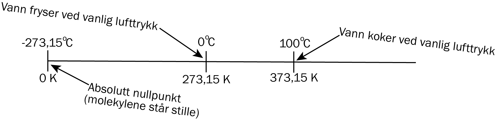
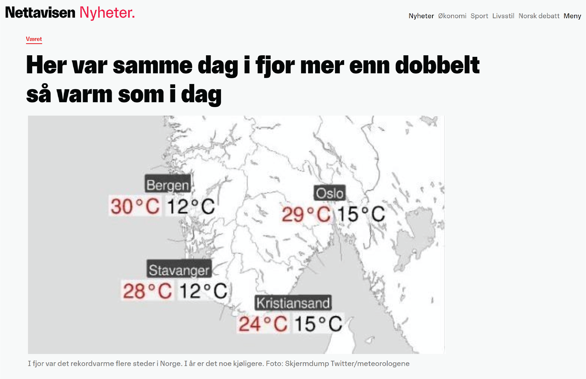
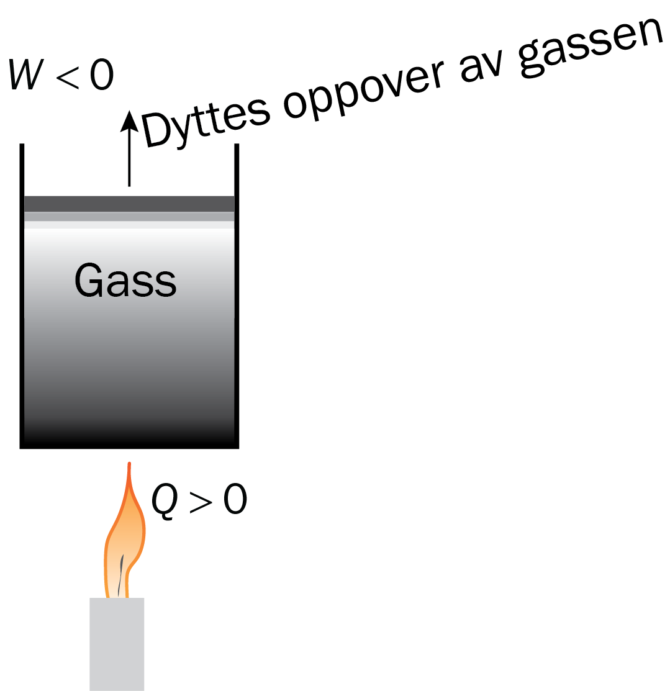
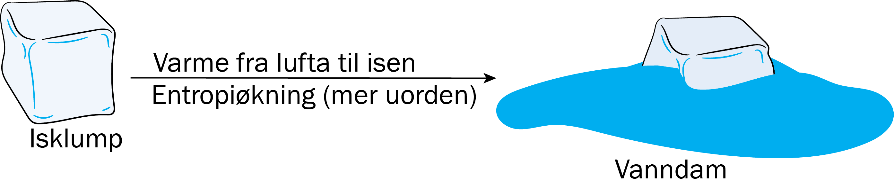
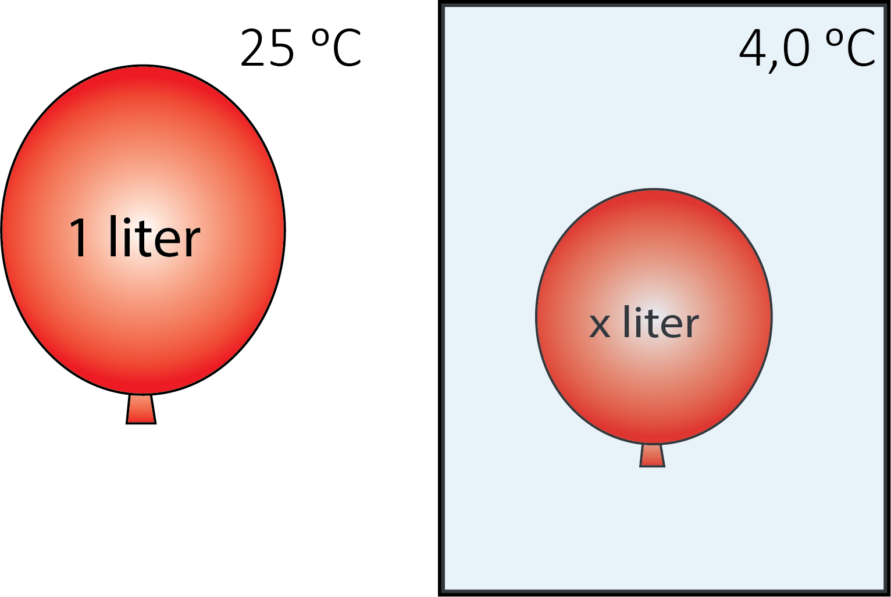
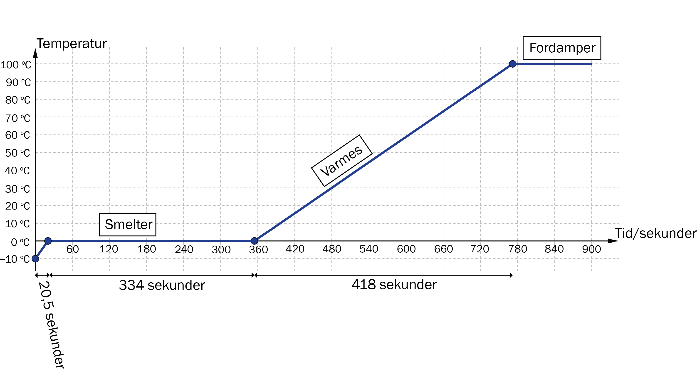
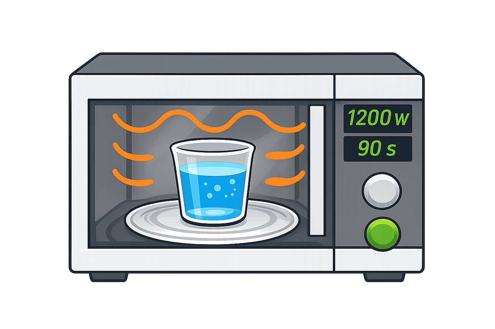

Termofysikk
Du skal ha kompetanse om
- temperatur \(T\) og varme \(Q\)
- termodynamikkens 1. lov \(\Delta U = \Delta Q + \Delta W\)
- termodynamikkens 2. lov \(\Delta S \geq 0\)
- trykk \(P\)
- den ideelle gassloven
- spesifikk varmekapasitet og faseoverganger
- virkningsgrad \(\eta = \frac{P_{\text{nyttbar}}}{P_{\text{tilført}}}\)
Varme og temperatur
Varme (\(Q\)) er energi som overføres fra et sted til et annet på grunn av temperaturforskjell.
Temperatur (\(T\)) er et mål på den gjennomsnittlige kinetiske energien til partiklene i et stoff.
I fysikk er det ofte vanlig å bruke temperaturenheten kelvin (K) i stedet for celsius (\(^\circ\)C).

Sammenhengen mellom temperatur og den gjennomsnittlige kinetiske energien til gasspartikler kan skrives som
\[ E_k = \frac{3}{2}kT \]hvor \(k = 1\text{,}38 \cdot 10^{-23}\,\text{J/K}\) er Boltzmanns konstant.
Eksempel
Hovedbestanddelen i luft er nitrogengass, som har en masse \(4\text{,}65 \cdot 10^{-26} \text{ kg}\).
Hvor stor fart har nitrogengassmolekylene når temperaturen er \(20^\circ\text{C}\)?
To-atomige gasser, for eksempel \(N_2\), \(H_2\) og \(O_2\), har i tillegg til translasjonsenergi også rotasjonsenergi, slik at den totale gjennomsnittlige energien blir
\[ E = \frac{3}{2}kT + kT = \frac{5}{2}kT \]
Termodynamikkens 1. lov
Termodynamikkens 1. lov sier at endringen av den indre energien \(\Delta U\) i en gass er summen av varmen \(Q\) og arbeidet \(W\) som gjøres på gassen,
\[ \Delta U = Q + W \]Økning av den indre energien kan f.eks. bety at temperaturen øker.
Eksempel
En gass er sperret inne i en beholder med et stempel.
Gassen får tilført varme \(2\text{,}00 \text{ kJ}\) og gassen gjør et arbeid \(0\text{,}50 \text{ kJ}\) på stempelet.
Hvor mye øker den indre energien?
Arbeidet er negativt; Gassen gjør et arbeid på omgivelsene, noe vi kan tenke på som at omgivelsene gjør et negativt arbeid på gassen.

Endringen av den indre energien er
\[ \Delta U = 2\text{,}00 - 0\text{,}50 = 1\text{,}50 \text{ kJ} \]Eksempel
Gassen i eksempelet over er \(2\text{,}0\) mol med \(\text{N}_2\)-gass.
Hvor mye øker temperaturen?
For en to-atomig gass er energien til hvert molekyl \( E = \frac{3}{2}kT + kT = \frac{5}{2}k T \).
Antall molekyler i gassen vår er \( N = 2{,}0 \cdot 6{,}02 \cdot 10^{23} \).
Så temperaturøkningen er gitt ved
\[ \begin{align} \Delta E = N \cdot \frac{5}{2} k \Delta T &= \Delta U \\ \Delta T &= \frac{2\Delta U}{5Nk} = \frac{2\cdot 1{,}50 \cdot 10^3}{5\cdot (2{,}0 \cdot 6{,}02 \cdot 10^{23}) \cdot 1{,}38\cdot 10^{-23}}\approx 36 \text{ K} \end{align} \]Temperaturen øker altså med omtrent \(36\text{ K}\) eller \(36^\circ\text{C}\).
Termodynamikkens 2. lov
Termodynamikkens 2. lov sier at varme går fra et sted med høyere temperatur til et sted med lavere temperatur.
Når dette skjer, sier vi at entropien \(S\) øker. Litt forenklet kan vi si at entropi er et mål på graden av uorden i et system. En alternativ formulering av 2. lov er derfor at den totale entropien i universet alltid øker eller forblir konstant.
\[ \Delta S \geq 0 \]Dette betyr at prosesser i naturen har en "retning": De går spontant fra mer ordnede tilstander til mindre ordnede tilstander. For eksempel vil varme fra lufta gå til isbiter, slik at de smelter. Det motsatte skjer ikke av seg selv; varme fra vannet går ikke til lufta av seg selv når lufta er varmere enn vannet, slik at vannet fryser til is igjen.

De fleste lovene i fysikken skiller ikke mellom framover eller bakover i tid, men termofysikkens 2. lov er et unntak. Litt filosofisk kan vi si at det er termofysikkens 2. lov som gjør at tiden går framover.
Trykk
Trykk \(P\) er kraft per areal: \( P = \frac{F}{A}, \) og måles i Pa (pascal) som er det samme som \(\frac{\text{N}}{\text{m}^2}\).
Vanlig lufttrykk er ca. 101 kPa, altså 101 tusen newton per kvadratmeter.
Eksempel
En pult har et overflateareal på 1,0 m².
Hvor stor masse tilsvarer kraften fra lufttrykket som presser pulten nedover?
\(F = P \cdot A = 101325 \cdot 1,0 = 101325 \text{ N}\), som tilsvarer \(m = \frac{F}{g} \approx 10329 \text{ kg}\).
Den ideelle gassloven
Sammenhengen mellom gasstrykk \(P\), volum \(V\), antall mol av en gass \(n\) og temperatur \(T\) er gitt ved
\[ PV = nRT \]hvor \(R = 8\text{,}314 \text{ m}^3\text{Pa}/\text{mol}\,\text{K}\) er en konstant.
Eksempel
En ballong har volum 1,0 liter ved romtemperatur. Vi plasserer den i et kjøleskap med temperatur 4,0 °C.

Hvor stort volum får ballongen?
Vi antar at lufttrykket er det samme. Den ideelle gassloven gir da
\[ \frac{PV_k}{PV_0} = \frac{nRT_k}{nRT_0} \;\; \xrightarrow{\text{ forkorter fellesfaktorer }} \;\; \frac{V_k}{V_0} = \frac{T_k}{T_0} = \frac{277}{298} = 0\text{,}93 \]Volumet blir dermed \( V_k = 0\text{,}93V_0 = 0\text{,}93 \text{ liter} \)
Varmekapasitet og faseoverganger
Spesifikk varmekapasitet sier hvor mye energi som kreves for å varme opp \(1{,}0\,\text{kg}\) av et stoff \(1{,}0\,\text{K}\).
| Stoff | Spesifikk varmekapasitet | Enhet |
|---|---|---|
| Vann | 4180 | J/(kg·K) |
| Is | 2050 | J/(kg·K) |
| Tre | 1700 | J/(kg·K) |
| Matolje | 2000 | J/(kg·K) |
| Luft | 1000 | J/(kg·K) |
| Glass | 840 | J/(kg·K) |
| Jern | 450 | J/(kg·K) |
Eksempel
Hvor mye energi trengs for å varme opp 0,20 kg vann fra 4°C til 90°C?
Smeltevarme er energien som kreves for å smelte \(1{,}0\) kg av et stoff uten at temperaturen endrer seg. Når et stoff smelter, brukes energien til å bryte bindingene mellom partiklene i stoffet, ikke til å øke temperaturen.
På samme måte trenger et stoff energi for å fordampe, og stoffer avgir energi når de fryser eller kondenserer. Slike overganger mellom fast stoff, væske og gass kalles faseoverganger.
| Faseovergang | Energi | Enhet |
|---|---|---|
| Smelting av is | 334 000 | J/kg |
| Fordamping av vann | 2 260 000 | J/kg |
Eksempel
En isklump på 1,0 kg ved -10°C tilføres varme med effekt 1000 W.
Beskriv temperaturutviklingen.
Fase 1: Oppvarming av is fra -10°C til 0°C
\[ \text{Energi: } 2050\,\frac{\text{J}}{\text{kg}\,^{\circ}\text{C}} \cdot 1\text{,}0\,\text{kg} \cdot 10^{\circ}\text{C} = 2\text{,}1 \cdot 10^{4}\,\text{J} \;\; \rightarrow \;\; \text{Tid: } \frac{2\text{,}1 \cdot 10^4\,\text{J}}{1000 \text{ J/s}} = 20\text{,}5\,\text{s} \]Fase 2: Smelting av is ved 0°C
\[ \text{Energi: } 334\,000\,\frac{\text{J}}{\text{kg}} \cdot 1\text{,}0\,\text{kg} = 3\text{,}34 \cdot 10^{5}\,\text{J} \;\; \rightarrow \;\; \text{Tid: } \frac{3\text{,}34 \cdot 10^4\,\text{J}}{1000 \text{ J/s}} = 334\,\text{s} \]Fase 3: Oppvarming av vann fra 0°C
\[ \text{Energi: } 4180\,\frac{\text{J}}{\text{kg}\,^{\circ}\text{C}} \cdot 1\text{,}0\,\text{kg} \cdot 100^{\circ}\text{C} = 4\text{,}18 \cdot 10^{5}\,\text{J} \;\; \rightarrow \;\; \text{Tid: } \frac{4\text{,}18 \cdot 10^5\,\text{J}}{1000 \text{ J/s}} = 418\,\text{s} \]
Virkningsgrad
Virkningsgrad \(\eta \) sier hvor stor grad av energien vi bruker som blir brukt til det vi "vil" bruke den til; Hvor stor andel av energien som gjør en virkning.
Definisjonen av virkningsgrad er \( \eta = \frac{P_{\text{nyttbar}}}{P_{\text{tilført}}} \).
Eksempel

2,0 dL vann varmes i en mikrobølgeovn i 90 s med en effekt på 1200 W.
Temperaturen på vannet øker fra \(\text{4}^\circ\text{C}\) til \(\text{80}^\circ\text{C}\).
Hvor stor er virkningsgraden?